<<売名>>
| 18．サイト開設の動機を教えて下さい。 |
| 人気者になりたくて。 |
私は手段を選ばない。
ウオウオルーガというUOサイト（こちら）は、UO内のいわゆる有名人という名の廃人達を
ビックリマンシールのように作成して晒すうざスレ系サイトらしい。
私は手段を選ばない。
ウオウオルーガの管理人さんであるsyakeさんに一日約３００通ほどメールを送った。
「私を書いてくれないと、スカラー派の呪いで家系３代呪います。
このメールを見たら、すぐに書いて下さい。書けない場合は、今後、UO内での会話の語尾は全て「～だっちゃ☆」に
しなければなりません。」
こんな内容のメールを５分おきに送ったおかげで
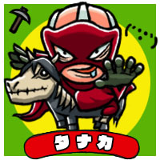
あひゃひゃ。
ありがとうございました。
でも
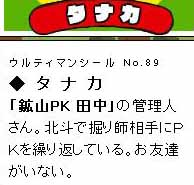
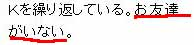
ちょっと、へこみました。
ま、まあ、これで、人気者への道を第一歩踏み出したわけである。
そして、私は妥協は許さない。
ウオウオルーガでシールになって晒されている方々のサイトをくまなく見た。
正直、最近見ていたのがうざスレばかり。
UO日記も
「こっち３、あっち４かな？あいつら、ボーラもよけれねえｗwww。当たり前だけどGET４、被０。
ここのシャード、レベル低ｓｇｗｗｗｗｗｗｗｗwww。」
そんな楽しい日記を見て、一端のPvPer気取りになっていたので
ひさびさにUO４コマとか見て、自分がいかに新鮮さを忘れていたか
痛感した。
そして、学んだ。
人気サイトはUO4コマ。これ必須。
おｋ－おｋ－
田中くんのUOほのぼの４こまー♪
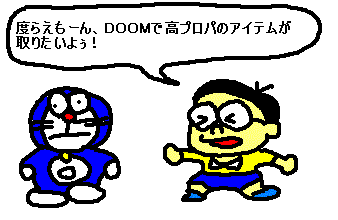
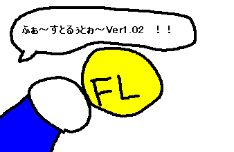
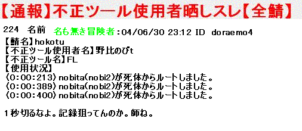
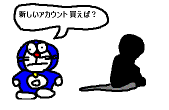
おｋー。
もう、これで怖いものない。
断然、人気者。
UOにログインすれば
「田中さん！！大ファンです！サインください！」
「おｋ－おｋ－。ああん？ノートもってないの？ルーンブックの書名変更に田中って書けだと！？出直して。」
「田中さん！大ファンです！もしよかったら、これ受け取って下さい！」
「おお、秘薬オール２００じゃないかー。君、見所あるよー。HAHAHA。」
「田中さん！これRMTで買った青い腕輪です。受け取って下さい！」
「おー、なんだかキレイじゃないか。ありがとー。HAHAHA。」
「田中さん！これ、インゴバグでもうけた小切手です！受け取って下さい！」
「ははは、ありがとー。おっと、もらいすぎて、重量オーバーだよ。HAHAHA｡｣
ファン達が、争って私に魔法を唱える。
「ブレス！！」
あー。なんてステキ。
ろぐいん♪ろぐいん♪
とりあえず、骨馬を取りにふらふらするとゲート側に誰かに殺された？幽霊さんがいた。
田中 「なんで幽霊なんですか？」
幽霊さん「ああ、仕事みたいなものです。」
田中 「？？何のですか？」
幽霊さん「死ぬのが仕事みたいなものです。」
田中 「私も同じようなものですｗ」
みたいな会話してると。
幽霊さんから素晴らしい言葉が。
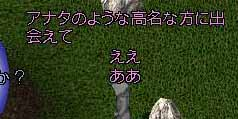
なんか、ここまで言われるのも、怖いですね。
でも、そんなこと言われたら
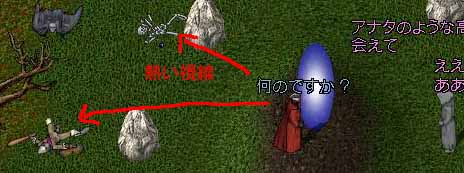
この人の死体を物色できない・・・。
しばし、人気者感を味わおうと、この幽霊さんと会話してると
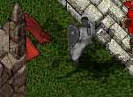
追っかけられる。
この方、
レブナント開放→ウイークン詠唱
私がディスペル唱えようとすると、ウイークン開放で、邪魔。これを延々と繰り返された。
もう泣きながら逃げて
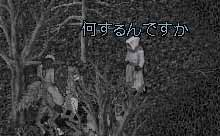
殺される。
すると
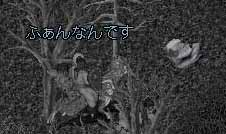
何か、私が想像してるのと違う。
でも、蘇生ゲート出してくれてうれしかった。
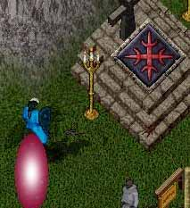
この後、回収に戻った瞬間ゲート消えて、この方とお話することもできませんでした。
馬が取れる場所にリコールしようとして
間違えて、PITに飛んでしまった。
まあ、PITにも馬いるんで、いいんですけど。
んで、飛ぶと。
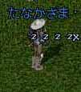
「たなかさま」
うぉおおぉおぉ！！
何様だよ？とか言われたら
たなかさまって言っていいですか！？
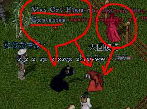
まあ、そんなの喜べる状況じゃないんですけどね。
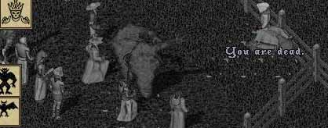
なんかEV出されまくった。
なんか、とりあえず殺しておこうという感じだった。
なんか、ノリでレスキルとかされそうな雰囲気だったので
幽霊のまんまお話。
楽しかったですけど・・。
でも・・・・・。
なんか、私が想像してるのと違う・・・・。
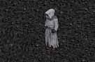
しばし、考える。
そうだ。
一回リセット押そう。
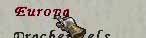
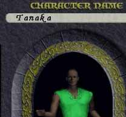
「ヨーロッパの貴公子田中」のフレーズでやり直します。
ええ。うそです。
ああ、一応、ウオウオルーガのsyakeさんにお礼はしました。
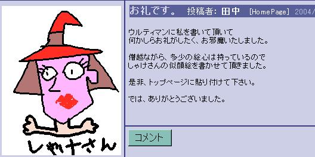
八つ当たり。
おしまい。